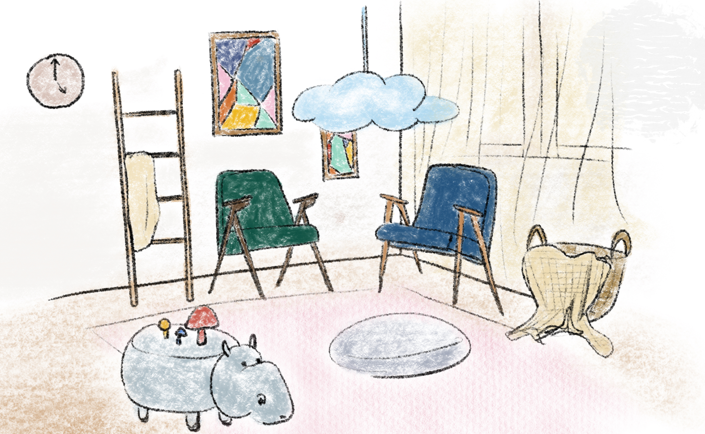

About Me

I'm Emily Zhang, a creative spirit and interior designer. My journey into design began with a simple fascination for the spaces we inhabit and the ways they can profoundly affect our emotions and interactions. Beyond the drafting table, I'm an avid traveler and a lover of the arts. These experiences have taught me the power of storytelling through design.
I am deeply committed to sustainability and adaptive reuse in my projects, reflecting my belief that good design is not just about creating beautiful spaces but about solving problems and enhancing everyday experiences. My approach combines a deep respect for tradition with a passion for innovation, always seeking to blend functionality with aesthetic appeal. This commitment extends to finding new lives for old spaces, turning what once was into something vibrant and new, reducing environmental impact while preserving history.
Thank you for visiting my site and joining me on this journey of discovery and transformation in design.
═════════════════════ ✿ ═════════════════════
Education
Rhode Island School of Design || Master of Design: Interior Architecture (Adaptive Reuse) Jun 2026
Yorkville University || Bachelor of Interior Design Jun 2024
University of Toronto || Honour Bachelor of Arts: Architecture Specialist Jun 2022
═════════════════════ ✿ ═════════════════════
Experience
Rhode Island School of Design: Teaching Assistant
As a Teaching Assistant for the Building Structures and Systems course, I supported undergraduate students in grasping complex design and construction principles. My responsibilities included preparing and delivering detailed lectures, providing hands-on assistance with assignments, and nurturing a supportive learning environment. This role allowed me to refine my ability to communicate complex information clearly and effectively, ensuring that students not only understood but also applied their knowledge practically.
2024
Studio IM: Junior Interior Designer
In my role at Studio IM, based in Toronto, I was actively involved in the creation of detailed technical drawings and the management of FF&E schedules for various interior design projects. My technical expertise in AutoCAD and Revit was essential in ensuring that all designs met the high standards of precision and functionality expected at Studio IM. I collaborated closely with senior designers to bring cohesive and aesthetically pleasing interior solutions to life, enhancing client satisfaction and project success.
2024
DSC Studio: Art and Design Editor
At DSC Studio, I crafted and revised compelling articles on art events, design news, and exhibitions, deeply engaging with the contemporary art and design industry. Conducting thorough research from reliable sources, I ensured content accuracy and relevance. My technical proficiency in Rhino, AutoCAD, and Adobe Suite, paired with a creative approach, allowed me to explore diverse perspectives and interconnect various aspects of the art world.
2022 - 2023
EXP: Design Assistant Intern
As a Design Assistant Intern at EXP, I collaborated with designers and engineers to streamline drawings and enhance project efficiency. I contributed to refining floor plans through detailed drawing and editing, improving design precision. Additionally, I led the creation of presentation materials, producing cohesive visuals that effectively communicated design concepts and plans, showcasing the team's vision and expertise.
2017